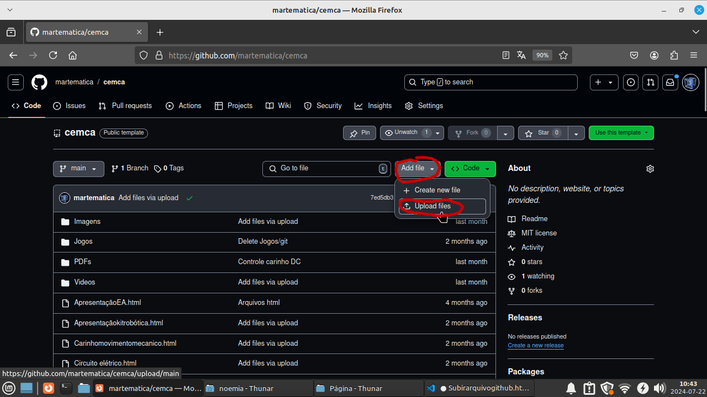
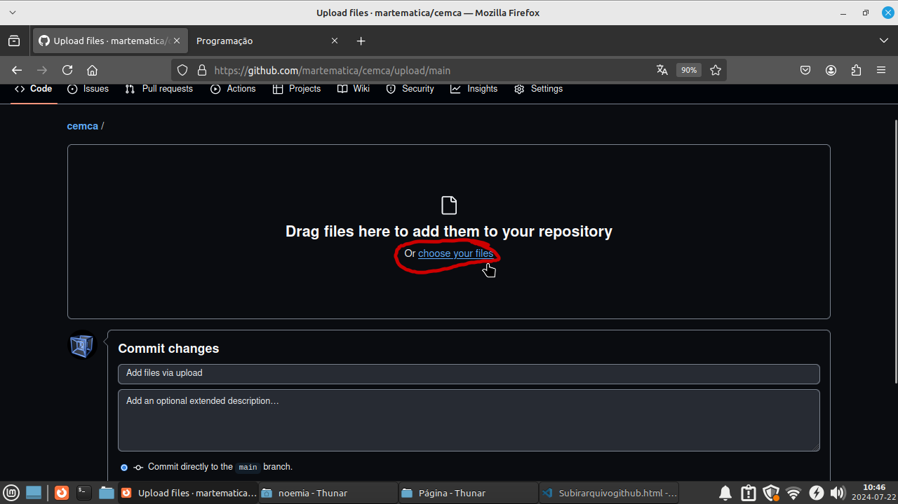
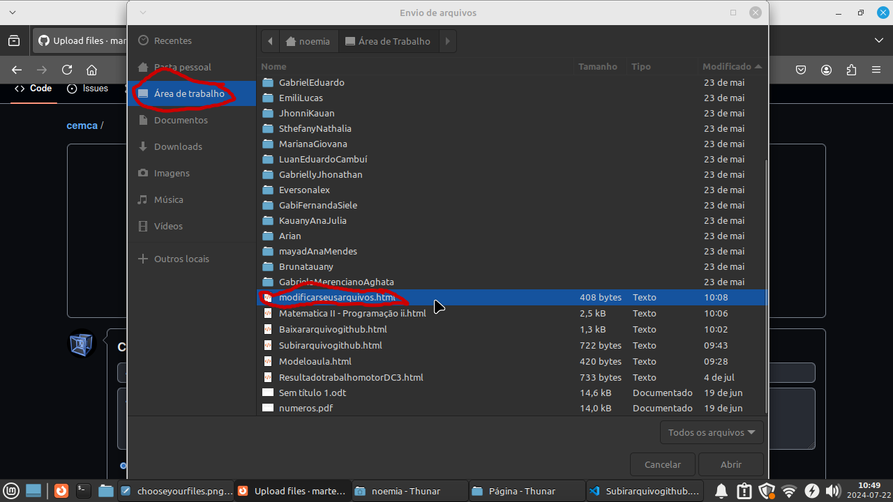
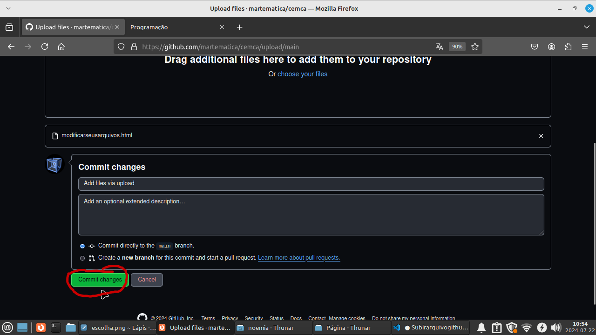

Depois de modificado vá na internet novamente na aba que tinha minimizado no github, vá
em Add file e em Upload file

e depois em choose your files

clicando em choose your files vai abrir a janela para escolher seus arquivos, logo entre em
Area de trabalho selecione seus arquivos modificados e cliclar em abrir

aqui você pode selecionar varios arquivos ou repetir de um por vez,
após selecionado os arquivos basta esperar carregar e clicar em Commit charges

pronto, agora só esperar um tempo e ver se seu site foi modificado!!!!